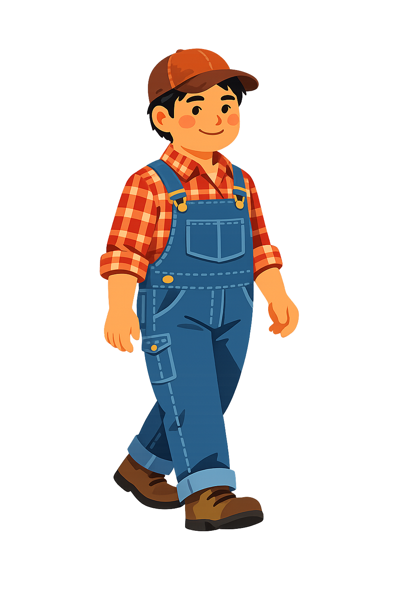

Built for the heartland. Designed for the people who watch the sky for a living.

DopplerDarnell is Eastern Iowa's go-to voice for severe weather on Facebook. With a devoted following built on clear, no-nonsense broadcasting, he covers everything from routine spring showers to the supercells that have Iowans reaching for their phones at 2 a.m.
Darnoppler's Forecast was built to put the exact tools he needs — real radar, raw data, and a broadcast-ready studio — directly into his hands.
Designed and engineered by Derek Hoang (Leck), Darnoppler began as a personal coding project born from a simple frustration: weather apps had become boring. Staring at sterile grids of numbers and static icons simply wasn't enough.
What started as a basic forecast widget quickly evolved into a custom, serverless meteorological engine. By integrating complex high-resolution HRRR models and building a custom MRMS radar pipeline from scratch, Derek transformed a learning project into a lightning-fast, professional-grade platform.
When Darnell needed a platform to support his broadcasts, Derek was given complete creative freedom to architect the homepage. The vision was clear: weather data doesn't have to be clinical. It should be interactive, dynamic, and genuinely fun to look at.
The aesthetic is a love letter to the Midwest. Instead of a generic dark map, the app is anchored by a living diorama—complete with rolling hills, golden wheat, and "Doppler," a character who actually lives in and reacts to the forecast. It pairs painterly simplicity with serious, professional-grade meteorology.
Right now, our radar pipeline and forecast data are laser-focused on the state of Iowa, capturing severe systems hours before they hit. But the radar is only half the story—our community is the ultimate real-time sensor network.
When a storm hits, data isn't enough. Whether it's a tornado spotted north or south of I-80, sudden flash flooding, or a local power outage, your ground-level reports allow Darnell to keep the entire state informed and safe. Reach out below to share what you're seeing.